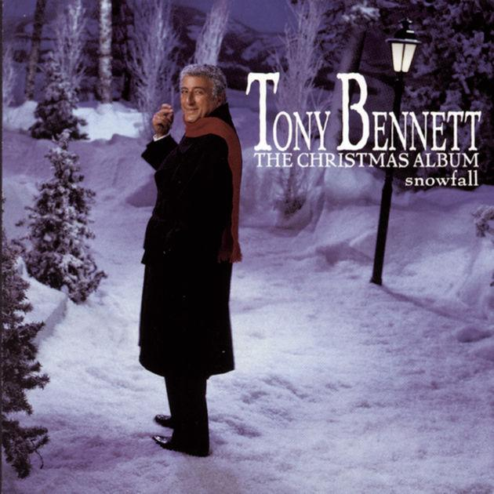

My Favorite Things
18 Dec 2020 · 3 min read

Some might protest that “My Favorite Things” is not, strictly speaking, a Christmas song. After all, there is no mention of Christmas, and that “holiday” word appears nowhere in the lyrics. However, those points notwithstanding, it has been included on many a Christmas album, and it’s easy to see why: with references to packages, sleigh bells, snowflakes and winters – as well as the overall theme of “my favorite things” – it’s easy to sneak it into any holiday playlist.
The song is by Rodgers and Hammerstein and is, of course, from The Sound of Music.
The lyrics are unusual. Rather than telling a story, or presenting some dramatic conflict, the bulk of the song simply lists “a few of my favorite things.” But what things they are! The song grabs us immediately with both the image and the alliteration of “raindrops on roses” and then simply doesn’t let go.
Raindrops on roses and whiskers on kittens,
Bright copper kettles and warm woolen mittens,
Brown paper packages tied up with strings,
These are a few of my favorite things.Cream-colored ponies and crisp apple strudels,
Doorbells and sleigh bells and schnitzel with noodles,
Wild geese that fly with the moon on their wings,
These are a few of my favorite things.Girls in white dresses with blue satin sashes,
Snowflakes that stay on my nose and eyelashes,
Silver-white winters that melt into springs,
These are a few of my favorite things.
And then, of course, there’s the reason for the lists.
When the dog bites,
When the bee stings,
When I’m feeling sad,
I simply remember my favorite things,
And then I don’t feel so bad.
It’s easy to underestimate the subtle genius of the lyrics. Consider the challenge of calling out fifteen things that every listener would consider genuinely wonderful, yet that wouldn’t appear mundane. Consider also the wonderfully imaginative use of language, as in “wild geese that fly with the moon on their wings.” And consider as well the glorious particularity of many of the images: it’s not just snow that is wonderful, but “snowflakes that stay on my nose and eyelashes.” And, finally, consider the engaging rhythms of the words and music. The first two lines of each verse feature a stop-and-go, halting kind of rhythm that emphasizes the items being identified; the third line then begins to flow more freely, and the fourth line swings and sways on a joyous upward ascent.
My favorite holiday version of this song is the one by Tony Bennett that appears on his album from 1968, Snowfall: The Tony Bennett Christmas Album. I love the swinging big band arrangement, but also Bennett’s vocals, as he so carefully enunciates each item on the list, managing to give each one a special feel, and actually managing to convince us how much each of these things means to him personally.
Although this is not a song that attempts to overtly strike any deep or spiritual theme, its imaginative list of fifteen achingly appealing and thoroughly worldly items – all cleverly described as only a few of the singer’s favorite things – works for me as an affecting testament to the manifold pleasures of human life on this wonderful planet of ours. This is a fitting theme for me at all times of the year, but seems especially appropriate during the holiday season.
Next: “Star of Wonder” by The Roches
Or see the complete list of Christmas Favorites from The Practical Utopian.
Thanks for reading! You can also generally follow my work on Medium and Buttondown.
If you’d like a convenient short URL to link to this piece, you can use pract.org/mft.html. Or feel free to simply share this piece using one of the social media buttons below!